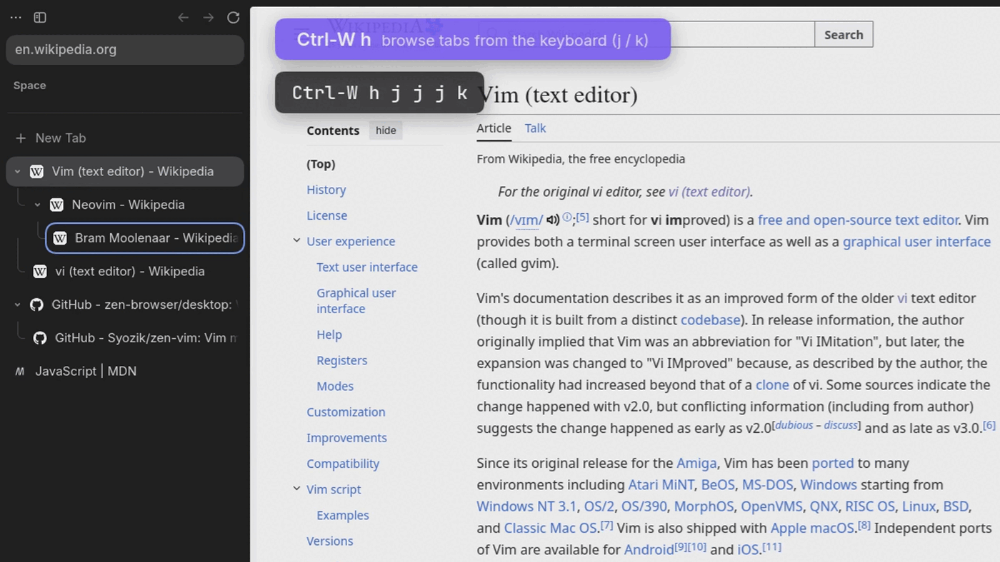

zen-vim
Vim motions, tree tabs and a command palette for the Zen Browser UI. This page lists every key and command and what it does.
It only handles the browser's own UI, meaning the sidebar, splits and glance. For vim keys inside web pages, install Vimium.

Install
With Sine
- Install Sine and restart Zen.
- Open Zen Settings → Sine Mods and enable JavaScript from unofficial sources.
-
Install this repository:
https://github.com/syozik/zen-vim/tree/master - Restart Zen.
Manually, with fx-autoconfig
-
Clone the repo as the
chromefolder of your Zen profile.about:profilesshows the profile path.git clone https://github.com/Syozik/zen-vim.git ~/.config/zen/<profile>/chrome -
Copy the two loader files from
program/into the Zen install directory, for example/opt/zen-browser-bin:-
config.jsgoes next to thezen-binexecutable -
config-prefs.jsgoes intodefaults/pref
-
-
Restart Zen. If the scripts don't load, open
about:supportand click Clear startup cache.
If tabs are not indented and the cursor tab has no
highlight, Zen is ignoring userChrome.css. Set
toolkit.legacyUserProfileCustomizations.stylesheets
to true in about:config.
Modes
A key does different things depending on the mode you are in. d types a letter on a page and closes a tab in the sidebar.
| Mode | You are here when | Leave with |
|---|---|---|
| Page | Normal browsing. This is the default. | |
| Sidebar | You pressed ctrl+w h to browse tabs. | Esc or a click anywhere |
| Command palette | You pressed ctrl+:. | Esc or a click outside |
| Glance | A glance preview is open. | Ctrl+w Esc |
To type Ctrl+w h, press Ctrl+w, let go, then press h. You can also keep Ctrl held for the second key.
Ctrl-w keys in page mode
| Key | Action |
|---|---|
| Ctrl+w | Close the current tab. A pinned tab goes back to its pinned page instead of closing. The tab closes after a quarter of a second, because the mod first waits for a second key. |
| Ctrl+w c | Close the current tab right away, no pause. |
| Ctrl+w h j k l | Focus the split pane to the left, below, above or right. |
| Ctrl+w h | When there is no pane further left, enter sidebar mode. If your sidebar is on the right, Ctrl+w l does this instead. |
| Ctrl+w m | Take the current tab out of its split, so it fills the window. |
| Ctrl+w v | Ask for a URL or search, then open it in a split next to the current tab. |
| Ctrl+w g | Ask for a URL or search, then open it as a glance. |
| Ctrl+w t | Translate the page into your language. Press again to restore the original. |
| Ctrl+w s | Show or hide the sidebar by toggling compact mode. |
| Ctrl+w a i | Ask for a question, then open a new Claude chat with it. |
| Ctrl+: | Open the command palette. On a US layout that is Ctrl+Shift+;. |
Sidebar mode
Enter with Ctrl+w h, or with Ctrl+w l if your sidebar is on the right. The highlighted tab is your cursor. Moving it does not switch tabs until you press Enter. In compact mode the sidebar slides in while you browse and hides again when you leave.
Move
| Key | Action |
|---|---|
| j / l | Next tab |
| k / h | Previous tab |
| 5 j | Type a number first to jump that many tabs. Works with h j k l. |
| g g | First tab |
| G | Last tab |
| Enter | Switch to the highlighted tab and leave sidebar mode |
| Esc | Leave sidebar mode without switching |
| q | Leave and turn compact mode on, which hides the sidebar |
Act on the highlighted tab
| Key | Action |
|---|---|
| d | Close the tab. Its nested tabs move up one level. This closes pinned tabs too. |
| D | Close the tab together with all tabs nested under it. |
| u | Reopen the last closed tab. |
| r | Rename the tab. Type the new name and press Enter. |
| y | Copy the tab's URL and leave sidebar mode. |
| v | Split the tab with the tab you are viewing. If it is already in a split, take it out. If the cursor is on the tab you are viewing, it is split with a duplicate of itself. |
| Space | Preview the tab in a glance without switching to it. |
| z | Fold or unfold the tabs nested under this tab. |
| p | Move the tab one level up in the tree. Its nested tabs come with it. |
| t | Move the tab to the top level of the tree. Its nested tabs come with it. |
| c | Move the tab's children up one level. The tab itself stays. |
Tree tabs
The sidebar is a tree. When you open a link in a new tab, the new tab nests under the tab it came from.
- A tab with nested tabs gets a small fold button. Click it, or press z in sidebar mode.
- Closing a parent keeps its nested tabs and moves them up one level.
- To close a parent and everything under it, hold Shift while clicking the close button, or press D in sidebar mode.
- Reopening a parent you closed that way brings its nested tabs back too.
- A dragged tab lands at the top level, and its nested tabs move up one level.
- Pinned tabs and essentials stay flat. Tabs opened from them do not nest.
- The tree survives a restart.
Command palette
Open with Ctrl+: from page mode.
| Key | Action |
|---|---|
| typing | Filter the list. Matches any part of a command name, ignoring case. |
| ↓ / Ctrl+n | Next command |
| ↑ / Ctrl+p | Previous command |
| Enter | Run the selected command. Clicking a command runs it too. |
| Esc | Close the palette |
The palette lists the commands you used most recently first.
Glance, Split and Claude ask for input. After you pick one,
the palette clears and waits for you to type and press
Enter. Glance and Split open text like
github.com as an address and send anything else
to Google.
All commands
| Command | What it does | Shortcut |
|---|---|---|
| Glance: preview a page | Asks for a URL or search and opens it in a glance. | Ctrl+w g |
| Split: open a new page in the split view | Asks for a URL or search and opens it beside the current tab. | Ctrl+w v |
| Claude: open a new claude chat… | Asks for a question and opens it in a new Claude chat. | Ctrl+w a i |
| Translate: toggle page translation | Translates the page into your language, or restores the original. | Ctrl+w t |
| Translate: open tool | Opens about:translations. |
|
| Sidebar: toggle (show/hide) | Turns compact mode on or off. | Ctrl+w s |
| Theme: toggle mode | Switches between the dark and light theme. | |
| Add current tab to essentials | Adds the current tab to Zen essentials. | |
| Screenshot: save visible | Screenshots the visible part of the page and copies it to the clipboard. | |
| Screenshot: save full page | Screenshots the whole page and copies it to the clipboard. | |
| Screenshot: open tool | Opens the built-in screenshot tool to pick an area. | |
| Tree: promote tab one level higher | Moves the current tab up one level in the tree. | |
| Tree: promote tab to the top | Moves the current tab to the top level. | |
| Tree: promote tab's children | Moves the current tab's children up one level. |
Commands that open a browser page
| Command | Opens |
|---|---|
| Preferences: open | about:preferences |
| Preferences: search engines | about:preferences#search |
| Preferences: privacy & security | about:preferences#privacy |
| Preferences: sync | about:preferences#sync |
| Downloads: open | about:downloads |
| PDF tool: open | about:pdf |
| Task Manager: open | about:processes |
| Tabs: unload to free memory | about:unloads |
| Add-ons: manage | about:addons |
| Passwords: open | about:logins |
| Config: open | about:config |
| Shortcuts: edit | about:keyboard |
| Profiles: manage | about:profiles |
| Privacy: protections dashboard | about:protections |
| Troubleshooting: info | about:support |
| Debugging: extensions & workers | about:debugging |
| Memory: report | about:memory |
| Policies: view | about:policies |
Glance
A glance is a floating preview on top of the current tab. Open one with Space on a tab in sidebar mode, or with Ctrl+w g for a new page.
| Key | Action |
|---|---|
| Ctrl+w Esc | Close the glance. A previewed tab goes back to its place in the sidebar; a page opened with the Glance command is closed. |
| Ctrl+w Enter | Open the glance as a regular tab. |
Custom keys and commands
Call addKeyListener and
addCommand from any module under JS/.
import { addKeyListener } from "./keyboard.mjs";
import { addCommand } from "./cmd_palette.mjs";
// The first argument is the mode: "tab" for page mode, "sidebar", "glance",
// "cmd_palette", or "*" for every mode.
addKeyListener("sidebar", "x", () => console.log("x pressed"));
// A palette command. `shortcut` and `takesArgs` are optional.
addCommand("hello", {
string: "Hello: greet", // the name shown in the palette
fn: (text) => console.log(text), // receives the typed input if takesArgs
takesArgs: true,
shortcut: "ctrl-w e",
});
Write key names in lowercase with modifiers first, in the order
ctrl-shift-alt-meta-key. Separate the keys of a
sequence with spaces, as in "g g" or
"ctrl-w a i". A sequence can be at most three keys
long. Space is space and capital G is
shift-g.